Seres e Criaturas
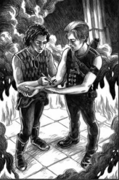
Caçadores das Sombras
Os Caçadores das Sombras são humanos que possuem sangue angelical em suas
veias. Eles surgiram a partir do desejo de um homem que invocou um anjo por meio de suas preces,
buscando poder para enfrentar os demônios que assolavam o mundo naquela época.
Atualmente, os Caçadores das Sombras funcionam como uma espécie de autoridade do Submundo, sendo
responsáveis por manter o equilíbrio entre mundanos, demônios e criaturas sobrenaturais. Eles
combatem demônios, submundanos fora da lei e até mesmo outros Caçadores das Sombras que quebram
as regras.
Poderes: Os Caçadores das Sombras utilizam runas mágicas
feitas com uma Estela para aumentar temporariamente força, velocidade, resistência e agilidade.
Também usam armas serafins, capazes de ferir e matar demônios.
Fraquezas: Dependem de suas runas e armas para lutar, já que
não possuem poderes naturais próprios. Sem elas, tornam-se muito mais vulneráveis.
Fadas
As Fadas, também conhecidas como membros do Povo das Fadas, são submundanos
descendentes da união entre demônios e anjos. Diferente de outras criaturas do Submundo, elas
possuem uma forte ligação com a natureza, magia e antigos reinos ocultos. Vivem principalmente
na Corte Seelie e na Corte Unseelie, sociedades marcadas por regras rígidas, política e
manipulação. As Fadas não conseguem mentir, mas são conhecidas por distorcer palavras e
fazer acordos perigosos com humanos e outras criaturas.
Poderes: As Fadas possuem habilidades mágicas, podendo criar
ilusões, manipular emoções e controlar elementos da natureza. Também possuem grande velocidade,
beleza sobrenatural e inteligência estratégica.
Fraquezas: O ferro e o sal são extremamente nocivos para as
Fadas, podendo enfraquecê-las ou afastá-las. Também são incapazes de mentir. Além disso, são
obrigadas a cumprir acordos e
promessas feitos por sua própria palavra.
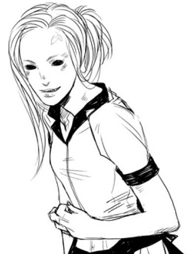
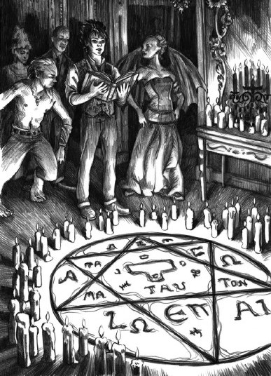
Feiticeiros
Os Feiticeiros são humanos descendentes de demônios, normalmente gerados
quando um demônio possui ou influencia um de seus pais. Por causa disso, nascem com habilidades
mágicas naturais e características físicas conhecidas como marcas demoníacas, que variam de
feiticeiro para feiticeiro. Diferente de outros submundanos, os Feiticeiros não dependem de
transformações ou armas para utilizar seus poderes, sendo considerados alguns dos seres mais
perigosos e imprevisíveis do Submundo.
Poderes: Os Feiticeiros possuem magia natural, podendo
lançar feitiços, criar portais, manipular energia, invocar criaturas e alterar memórias ou
aparências.
Fraquezas: O uso excessivo de magia pode causar cansaço
físico e mental. Alguns feitiços também exigem preparação, objetos mágicos ou invocações
específicas para funcionarem corretamente.
Lobisomens
Os Lobisomens são humanos que contraíram uma doença demoníaca conhecida como
licantropia. A infecção pode ser transmitida por mordidas ou arranhões de outro lobisomem
transformado. Após a transformação, passam a integrar o Submundo, vivendo geralmente em
alcateias e seguindo regras próprias. Apesar de serem considerados submundanos, muitos
Lobisomens convivem pacificamente com mundanos e outros seres sobrenaturais, enquanto outros
utilizam seus poderes de forma violenta ou fora das leis do Submundo.
Poderes: Os Lobisomens possuem força, velocidade,
resistência e sentidos muito superiores aos humanos comuns. Também apresentam grande capacidade
de regeneração e podem se transformar em criaturas híbridas ou completamente lupinas,
tornando-se ainda mais perigosos em combate.
Fraquezas: A prata é extremamente tóxica para Lobisomens,
podendo enfraquecê-los gravemente ou até matá-los. Durante a lua cheia, alguns também podem
perder parcialmente o controle de seus instintos e emoções.
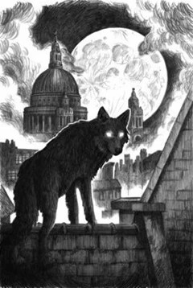
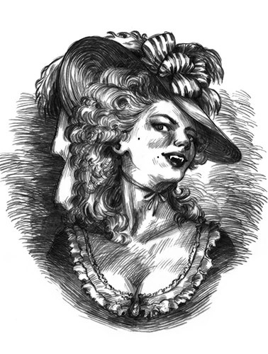
Vampiros
Os Vampiros são humanos infectados por uma doença demoníaca após serem
mordidos por outro vampiro e morrerem durante a transformação. Após retornarem à vida, tornam-se
submundanos imortais que precisam consumir sangue para sobreviver. Muitos Vampiros vivem em clãs
organizados e seguem regras próprias dentro do Submundo, enquanto outros agem de forma
independente. Sua aparência humana permite que se misturem facilmente entre os mundanos.
Poderes: Os Vampiros possuem força, velocidade, reflexos e
regeneração sobre-humanos. Também conseguem enxergar no escuro e envelhecem muito lentamente ou
deixam de envelhecer completamente.
Fraquezas: A luz solar enfraquece ou pode destruir Vampiros,
dependendo da intensidade da exposição. Também possuem vulnerabilidade a objetos religiosos,
fogo e armas capazes de atingir diretamente o coração.
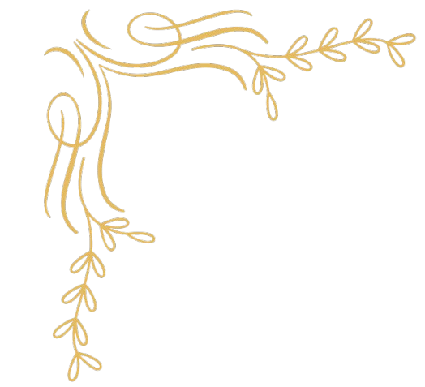
Seres Derivados e Outros
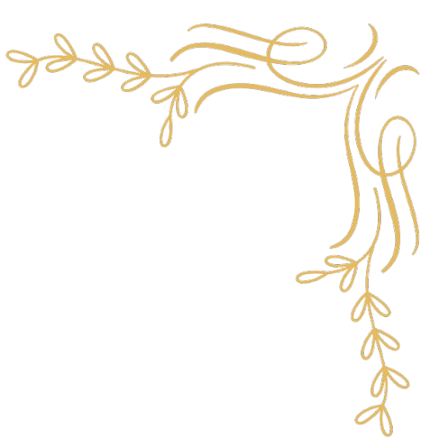
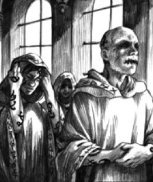
Irmãos do Silêncio
Os Irmãos do Silêncio são um grupo seleto e enigmático de Caçadores das Sombras (Nephilim) masculinos que vivem em isolamento na Cidade Silenciosa. Eles atuam como guardiões, médicos, arquivistas e sábios, dedicando suas vidas à preservação do conhecimento nephilim. Apesar de viverem de forma reservada, ainda podem ser vistos com mais frequência do que as Irmãs de Ferro.
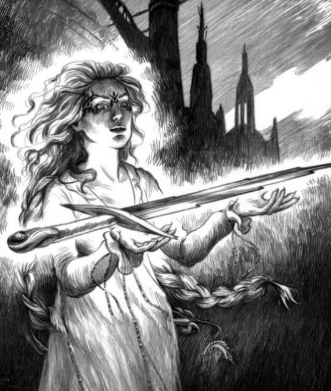
Irmãs de Ferro
As Irmãs de Ferro são Caçadoras das Sombras (Nephilim) femininas que abandonam suas antigas vidas para viver em isolamento na Cidade Adamant. Elas dedicam suas existências à forja do adamas, o raro metal celestial utilizado na criação das armas, lâminas serafim e instrumentos dos Nephilim.
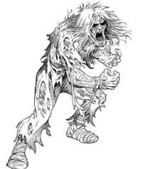
Renegados
Renegados são mundanos que receberam marcas angelicais (runas) dos Caçadores das Sombras. Como seus corpos não suportam o poder das runas, muitos acabam morrendo ou enlouquecendo. Aqueles que sobrevivem tornam-se seres descontrolados e violentos, perdendo a noção do certo e do errado, além de poderem ser manipulados por quem os transformou.
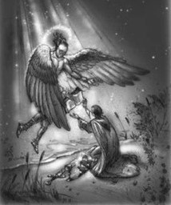
Anjos
Anjos
Anjos são seres celestiais extremamente poderosos e raros, que descem à Terra apenas em momentos críticos. Foi o anjo Raziel quem concedeu seu sangue a Jonathan Caçador das Sombras, criando assim os primeiros Nephilim. Os anjos representam a ordem celestial e possuem poderes capazes de enfrentar até mesmo as maiores forças demoníacas.
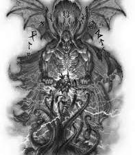
Príncipes do Inferno
Príncipes do Inferno são os demônios mais poderosos existentes, governando diferentes domínios infernais e estando acima de todas as outras criaturas demoníacas. São entidades antigas, inteligentes e extremamente perigosas, capazes de manipular humanos e influenciar acontecimentos no mundo mortal.
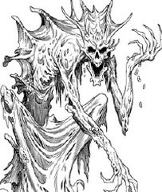
Demônios Maiores
Demônios Maiores são criaturas demoníacas de alta hierarquia, servindo muitas vezes aos Príncipes do Inferno. Possuem grande poder destrutivo, habilidades sobrenaturais avançadas e inteligência elevada, tornando-se ameaças muito mais perigosas do que demônios comuns.
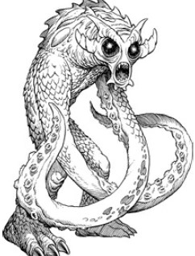
Demônios Comuns
Demônios Comuns são criaturas infernais inferiores, frequentemente invocadas ou atraídas para o mundo mortal. Apesar de variarem em aparência e habilidades, geralmente possuem menos inteligência e poder, atacando humanos e Nephilim de forma mais instintiva e violenta.